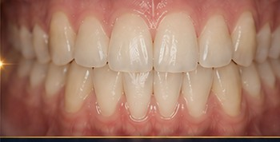
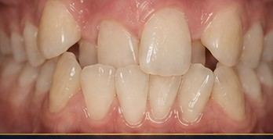
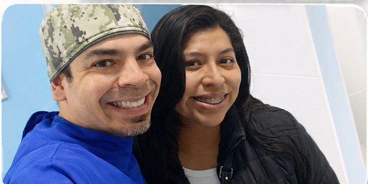
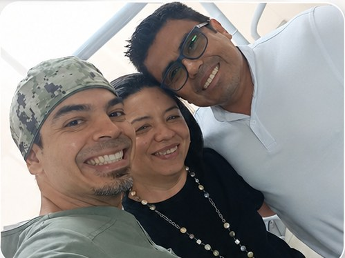
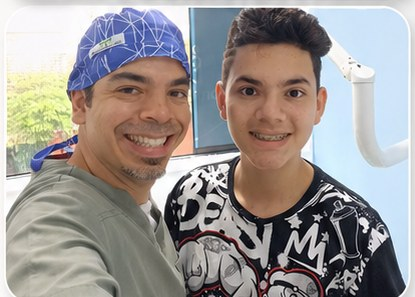
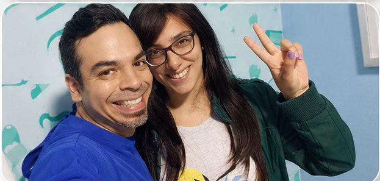
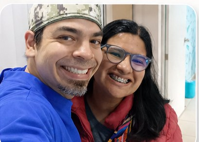

Miraflores · Lima
Cada sonrisa necesita un plan diferente
Ortodoncia y odontología integral con diagnóstico personalizado. Una evaluación resuelve tus dudas en pocos minutos.
Quiénes somos
Odontología especializada, con atención cercana.
EuroBraces Center reúne ortodoncia y odontología integral en un solo lugar, en el corazón de Miraflores. Evaluamos tu caso, te explicamos las opciones reales y armamos un plan a tu medida — sin promesas genéricas.
- 08
- Especialidades
- L–V
- 9:00 — 19:00
- Sáb
- hasta 12:00
Diagnóstico
¿Qué tratamiento necesita tu sonrisa?
Elige lo que ves en tu boca. Arrastra la línea para comparar.


Antes DespuésNuestros servicios
Todo lo que tu sonrisa necesita, en un solo lugar.
- 01
Ortodoncia
Brackets metálicos, estéticos y alineadores.
- 02
Operatoria dental
Restauraciones y tratamiento de caries.
- 03
Prótesis dentales
Fijas y removibles para recuperar la función.
- 04
Periodoncia
Salud de encías y tejidos de soporte.
- 05
Cirugía bucal
Extracciones y terceras molares.
- 06
Endodoncia
Tratamiento de conductos.
- 07
Odontopediatría
Atención dental para los más pequeños.
- 08
Blanqueamiento dental
Devuelve brillo y tono al esmalte.
Casos Clínicos
Casos reales, evolución comprobada.
Seguimiento fotográfico de pacientes tratados en nuestro consultorio de Miraflores.


Nuestros pacientes
Personas que confiaron en nosotros.
Momentos y sonrisas compartidas en nuestras consultas de Miraflores.





Quiénes somos
El equipo detrás de tu plan.

Dr. Anthony De Jesús
Atención profesional y cercana para tu sonrisa.
Ver el perfil del Dr. Anthony De Jesús →
Dra. Belén Torres
Atención integral con calidez y profesionalismo.
Ubícanos
Elías Aguirre 126
Miraflores 15074
- Horario
- Lunes a viernes · 9:00 am — 7:00 pm
Sábados · hasta 12:00 pm - Citas
- 986 186 192
- Agenda tu evaluación
Preguntas frecuentes
Lo que más nos preguntan antes de empezar.
¿Cuánto dura un tratamiento de ortodoncia?
Depende del diagnóstico. En apiñamientos leves o moderados la fase activa suele tomar entre 12 y 18 meses; los casos complejos —asimetrías, mordida abierta o alteraciones del plano oclusal— pueden requerir más tiempo. En la evaluación inicial el especialista estima el plazo real de tu caso antes de iniciar.
¿Qué diferencia hay entre brackets metálicos, estéticos y alineadores?
Los brackets metálicos son la opción más resistente y accesible. Los estéticos (cerámicos) usan un material del color del diente y se notan mucho menos. Los alineadores son férulas transparentes y removibles. Los tres corrigen la posición dental: la elección depende del caso clínico y de tu rutina diaria, y se define en la consulta.
¿La ortodoncia duele?
La colocación de la aparatología no duele. Es normal sentir presión o sensibilidad durante los dos o tres días posteriores a cada activación; se controla con analgesia habitual y una dieta blanda esos días. Si la molestia persiste, revisamos el caso sin costo adicional.
¿Hay una edad límite para usar ortodoncia?
No. El tratamiento es viable a cualquier edad siempre que las encías y el hueso de soporte estén sanos, algo que se verifica en la evaluación. Una parte importante de nuestros pacientes en Miraflores son adultos que inician su tratamiento después de los 30.
¿Atienden niños?
Sí. Contamos con odontopediatría y con ortodoncia interceptiva, que aprovecha el crecimiento para guiar la erupción dental y corregir hábitos antes de que el problema se consolide.
¿Dónde están y cómo agendo una evaluación?
Estamos en Calle Elías Aguirre 126, Miraflores 15074, Lima. Atendemos de lunes a viernes de 9:00 a. m. a 7:00 p. m. y sábados hasta el mediodía. Puedes agendar por WhatsApp o llamando al 986 186 192.
Una evaluación puede resolver
tus dudas en pocos minutos.
Agenda tu evaluación
WhatsApp 986 186 192 · Elías Aguirre 126, Miraflores